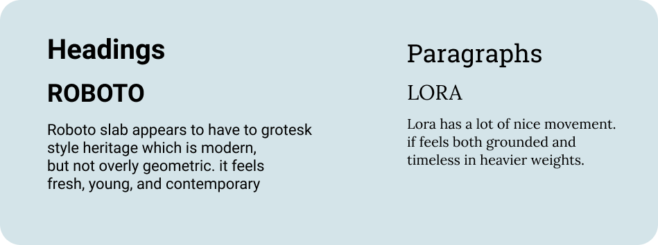

Cirrus is a cloud storage app with organization in mind. Save and manage everything and anything about your digital life.


In the cloud storage industry, there are no storage of options. However, this is the story of the Cirrus. I was entrusted to create a cloud storage app. I was tasked with researching and identifying a target market that would benefit from a new cloud storage solution and bring a new, unique cloud storage to market.
My role in this project was to create a cloud storage app that challenges competitors. Despite the vast amount of competition, this design allows users such as collaboration, organization, upload files and sharing amongst friends, family and coworkers.
The solution is Cirrus. Cirrus is a cloud storage and multi - purpose of Cirrus with a focus on organization that provides creative with convenient solution also bringing in a new perspective. Cirrus has the fun flexibility of document and managing real time collaboration, organization and upload files in one single place.
I kicked off this project with a user survey to learn about cloud storage apps and to understand what the audience really needs. What kind of users would be using the service.
92% of respondents use cloud storage apps for personal use.
61% of respondents use desktop/laptop computers to access digital assets.
76% of respondents uses a smartphone to browse.
84% of respondents are google drive users.
Most of them use cloud drives for organization,collaboration,Share and Access information.
The project was kicked off by conducting competitive analysis of key market competitors consisting of Google drive, Drop Box , and oneDrive. Through this analysis, I found weaknesses in the market, an analysis of their weaknesses presented an opportunity to create unique feature to this new cloud storage solution.

Google drive has been around since 2006. However, it was only for text documents and spreadsheets back then rather than an independent cloud storage. Although it was initially limited to documents, the service has since evolved into a flexible cloud storage service which can handle any type of file. Google Drive is fully operable through a web interface. Users can access a file management system via the website. You can create new folders, upload files or even entire folders and move them.

Dropbox has been on the market since 2007 and was most likely many PC users’ first experience with cloud storage. Dropbox so appealing for professional collaboration back then and now. This service is also useful for personal needs. It is often impossible to send large files, such as vacation photos, by email due to size limitations. Users need an account with Dropbox to be able to collaborate.
OneDrive can back up your personal and work files online. OneDrive is Microsoft's storage service for hosting files in the "cloud." It is available for free to all the owners of a Microsoft account. OneDrive offers users a simple way to store, sync and share various types of files, with other people and devices on the internet.
Due to the results of the survey, I focused on creating user personas of two target audiences, students and professionals. Goals, needs, revolved around features that the client wanted included in the project and that was highly rated amongst participants of the survey. Features such as collaboration, sharing, organization file.
Needs to use multiple cloud storage services for his work.
Advanced security of files stored in the cloud sharing a folder or group of items with someone else.

Lack of security of files, Service Plan
Comprehensive organizing methods sharing a single item with someone else to collaboration with his peers.
Both target audiences have similar goals. Keeping that in mind and going off the result from both. I came up with, in order of priority based on what user use frequently and relevance.
As a returning user, I want to...
i want to be able to upload any type of file
I want to be able to organize files into folders, groups, categories
I want to be able to share a file/folder with others
I want to share a photo / I want to share a video
With those stories in mind, I focused on being able to include all important features to make it easier for the user to use the product. I played around with the idea of labels and planned out flows that would match each user story.


As I drew the sketches for the wireframes, I’d prioritized my user stories and flows, I decided that designing the landing page first and I created pages for the onboarding process, the landing page after signing in, organizing files, sharing, a page where files are located, the upload. After sketching a few iterations from the user flow. I started working on digital wireframes in figma.

Brainstorming and research tells us the first clouds that most everyone sees on a daily basis are the Cirrus Clouds. After researching the different clouds i came to the conclusion that the Cirrus Cloud is the most common cloud seen. It was chosen for its simplicity. It is soft and unobtrusive more like a pillow almost inviting you to lay down, relax. Unlike a storm cloud that may strike fear into the observer. It is their ice crystal build up at sunset and sunrise causes us to see those gorgeous colors. The Earth is were we all live and we also know the sky where the Cirrus Clouds reside is infinite. Therefore our storage space is limitless.


Choosing the “Typeface” was indeed a little more challenging, but I finally settled on the Lora Bold and Roboto slab. The typography for the word CIRRUS uses Lora. I also wanted to incite emotions such as trust, vibrant, inspired, creative. The Lora, Roboto Slab Typeface is clean, something that was indeed appealing to and going to attract all comers. Lora Bold represent the creativity and fluidity of the brand.
I wanted the colors to be vibrant in order to catch the user’s attention but also stand out. Lora Regular represent the creativity and fluidity of the brand. Choosing the colors was fairly easy. I not only chose colors that would fit well with everyone, I also wanted the colors to be vibrant in order to catch the user’s attention but also stand out.

Let's put everything into together

This was an interesting project for me. Reflecting on the conclusion of the project, I believe that cirrus is a great alternative to other cloud services. The research done in this project to create a bigger better cloud service then what is already on the market taught me just how important research is. Initially I was very worried because this was my first project. Not everything worked in the design process. Before the project even started, i had doubts about how this was going to differentiate from other popular cloud storage services, already on the market. Research showed me some of the differences and unveiled some of their flaws. In my opinion research is indeed an invaluable tool. Through the course of this project i've been able to distinguish key metrics for a successful cloud storage.